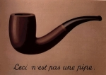

René Magritte_ceci n'est pas une pipe
Falar sobre o “sistema do Fausto” é inútil, porque só o entende quem já
vendeu a alma e, portanto, o assunto não interessa a quem já está
queimando ou quem se deu bem e está gordamente satisfeito. Como, porém,
este blog só trata de inutilidades...
O problema não é tanto o “sistema do Fausto” que já existe há milhares
de anos e poderia ser eliminado gradativamente, se fosse conveniente à
evolução social, através de ações diretas de desavergonhamento. O
problema é que manter o sistema é uma forma de manter o poder e as
lutas pelo poder são sempre encarniçadas. Além disso, o sistema está
cada vez mais sofisticado: os assassinatos dos rebeldes não ocorrem
mais à luz do dia, de forma escandalosa, para difundir o medo, através
do terror e impor a submissão aos desprotegidos. Agora, há instituições
que velam pelo pagamento da alma e há médicos (geralmente com diplomas
escusos), que, comprometidos pela origem escusa da formação, são
obrigados (e muitas vezes o fazem com satisfação) a eliminar os
rejeitados. Há ainda policiais eunucos (formados numa estranha piedade
pelas mulheres) que precisam descarregar a impotência e a arma a troco
de qualquer migalha.
Outra questão é a longevidade do sistema. Só porque ele é velho como
Abraão, não significa que esteja correto, ou seja o mais indicado para
os tempos modernos. Woody Allen, se o soubesse, criaria bons filmes
para indicar sua superação (e, no entanto, fez um monte de bobagem
risível). Há erros milenares, como a perda do Paraíso, até hoje
lamentada, hipocritamente, pelos religiosos de todos os matizes.
Até outro dia, no oeste americano, se andava nas ruas armado até os
dentes. Ali, no sertão, o cangaço achava normal degolar os marcados
para morrer. A brutalidade não é diferente hoje. Ela é anestesiada por
algum argumento silogístico ou com o emplasto monetário, para que os
externos entendam que o assassínio foi justo. A brutalidade tem outras
formas (o terrorismo, o extermínio, mas também as eleições compradas,
as manipulações da justiça, as emendas ao orçamento federal...). A
civilização já está suficientemente sensível, no entanto, para rejeitar
os assassinatos brutais e muito explícitos. Por isso, os “conselheiros”
precisam de médicos mal formados e acidentes de trânsitos e suicídios...
É preciso empurrar a civilização para frente: não apenas com a
diminuição da miséria e da ignorância, que sempre fertilizam a
barbárie, mas com ações mais sutis, como a de tornar escandalosa a
corrupção, que sempre alimentou o Fausto ou dificultar a necessidade de
abortos...
Isso, porém, não é tarefa para um dia.
Por enquanto, cumpre saber quem ganha com a CPMF.
(canto de cisne para Irmã Nóia)